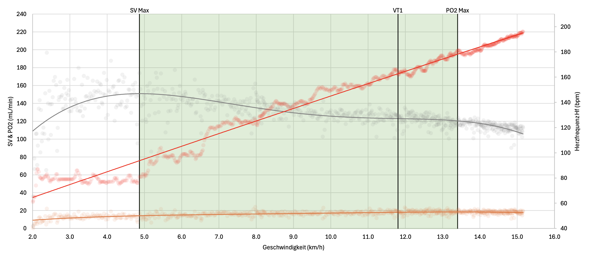

The visualization of the most important cardiovascular parameters in comparison with heart rate provides insight into the functioning of the heart and its health.
If the maximum of the stroke volume occurs at a relatively low heart rate, this indicates that the heart can adapt its stroke performance to the situation of stress. This is shown in the relatively step-like increase of the heart rate Hf. At the ventilatory threshold 1 VT1, this usually transitions into a more and more linear increase, which is an indicator that the heart must respond to muscular stress with greater performance.
The course of the oxygen pulse PO2 indicates whether cardiovascular performance capacity is already exhausted: if the value begins to decrease before muscular exertion, this is a sign that the required oxygen can no longer be delivered by the heart and therefore an acute O2 deficit develops.